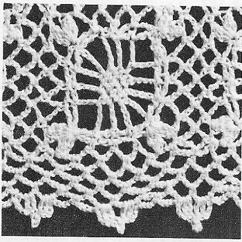

Shadow Squares Tablecloth - Free Crochet Pattern MATERIALS: J. & P. COATS "KNIT-CRO-SHEEN," Art. A. 64: 18 balls of No. 1 White, No. 61 Ecru or No. 42 Cream for Small Cloth; 24 balls for Large Cloth; or J. & P. COATS "KNIT-CRO-SHEEN," Art. A. 65: 12 balls of No. 1 White or No. 61 Ecru for Small Cloth; 15 balls for Large Cloth. Milwards Steel Crochet Hook No. 7. Small Cloth measures 65 inches square Large Cloth measures 65 x 84 inches Each motif measures 2 3/4 inches square. FIRST MOTIF . . . Starting at corner, ch 5-starting chain made. 1st row: In 5th ch from hook make tr, ch 7 and 2 tr. Ch 3, turn. 2nd row: Skip first tr, dc in next tr, ch 5, sc in next loop, ch 5, dc in next tr, dc in top of starting chain. Ch 3, turn. 3rd row: Skip first dc, dc in next dc, ch 5, sc in next loop, sc in next sc, sc in next loop, ch 5, dc in next dc, dc in top of turning chain. Ch 4, turn. 4th row: Skip first dc, tr in next dc, ch 5, sc in next loop, sc in next 3 sc, sc in next loop, ch 5, tr in next dc, tr in top of turning chain. Ch 4, turn. 5th row: Skip first tr, tr in next tr, ch 4, sc in next 5 sc, ch 4, tr in next tr, tr in top of turning chain. Ch 3, turn. 6th row: Skip first tr, dc in next tr, ch 4, skip next sc, sc in next 3 sc, ch 4, dc in next tr, dc in top of turning chain. Ch 3, turn. 7th row: Skip first dc, dc in next dc, ch 3, skip next sc, sc in next sc, ch 3, dc in next dc, dc in top of turning chain. Ch 4, turn. 8th row: Skip first dc, holding back on hook the last loop of each tr, tr in next dc, skip next 2 loops, tr in next dc, tr in top of turning chain, thread over and draw through all loops on hook-joint tr made. Ch 3, but do not turn. Now work in rnds as follows: 1st rnd: Holding back on hook the last loop of each dc, make 2 dc in tip of first joint tr, thread over and draw through all loops on hook-2-dc cluster made; ch 3, make a 3-dc cluster in same place; working along the 4 sides of motif, ch 4, sc in top of turning chain made at end of 6th row, ch 5, sc in last dc of 6th row, ch 5, sc in top of turning chain made at end of 4th row, ch 4, in last tr of 4th row make 3-dc cluster, ch 3 and 3-dc cluster; ch 4, sc in top of turning chain made at end of 2nd row, ch 5, sc in last dc of 2nd row, ch 5, sc in top of starting chain, ch 4, in first ch of starting chain make 3-dc cluster, ch 3 and 3-dc cluster; ch 4, sc in last tr of first row, ch 5, sc in top of turning chain made at end of first row, ch 5, sc in last dc of 3rd row, ch 4, in top of turning chain made at end of 3rd row make 3-dc cluster, ch 3 and 3-dc cluster; ch 4, sc in last tr of 5th row, ch 5, sc in top of turning chain made at end of 5th row, ch 5, sc in last dc of 7th row, ch 1, dc in tip of first cluster to form last loop. 2nd rnd: Ch 1, sc in loop just formed, * ch 5, in next ch-3 corner loop make sc, ch 7 and sc, (ch 5, sc in next loop) 4 times. Repeat from * around, ending with (ch 5, sc in next loop) 3 times; ch 5. Join with sl st to first sc. Break off and fasten. SECOND MOTIF . . . Work exactly as for First Motif until the first rnd has been completed. 2nd rnd: Ch 1, sc in loop just formed, ch 5, sc in next ch-3 corner loop, ch 3; now join 2 motifs along one side as follows: Sl st in 4th corner loop made on First Motif, ch 3, sc in same corner loop on Second Motif, (ch 2, sl st in next loop on First Motif, ch 2, sc in next loop on Second Motif) 4 times; ch 2, sl st in next loop on First Motif, ch 2, sc in next corner loop on Second Motif, ch 3, sl st in next corner loop on First Motif, ch 3, sc in same corner loop on Second Motif; working on Second Motif only, (ch 5, sc in next loop) 4 times; starting at * on 2nd rnd of First Motif, complete Second Motif exactly as for First Motif (no more joinings). Make 23 x 23 motifs for Small Cloth, or 23 x 30 motifs for Large Cloth, joining motifs as Second Motif was joined to First Motif (where 4 corners meet, join corners to previous joinings). BORDER . . . 1st rnd: Attach thread in last loop preceding any corner loop; sc in same loop, * ch 5, in corner loop make sc, ch 5 and sc; ** (ch 5, sc in next loop) 5 times; ch 5, sc in joining between motifs. Repeat from ** across to within next corner loop. Repeat from * around, ending with ch 2, dc in first sc to form last loop. 2nd rnd: Ch 1, sc in loop just formed, ch 5, sc in next loop, * ch 5, in next corner loop make sc, ch 5 and sc; ** ch 5, sc in next loop. Repeat from ** across to within next corner loop. Repeat from * around, ending as on first rnd. 3rd rnd: Ch 1, sc in loop just formed, (ch 5, sc in next loop) twice; starting at * on 2nd rnd, complete rnd. 4th rnd: Ch 1, sc in joining, ch 4, sc in next loop, ch 4, in next loop make sc, ch 3 and 2 dc; ch 3, sl st in last dc made, in next loop make 2 dc, ch 3 and sc; * ch 4, in next corner loop make 3 dc, ch 5 and 3 dc; ** ch 4, in next loop make sc, ch 3 and 2 dc; ch 3, sl st in last de made, in next loop make 2 dc, ch 3 and sc; ch 4, sc in next loop. Repeat from ** across to within next corner loop, ending with 2 dc, ch 3 and sc in last loop. Repeat from * around, ending with 2 dc in first loop used at beg of rnd, ch 3. Join with sl st to first sc. Break off and fasten. Block to measurements.  HOME |